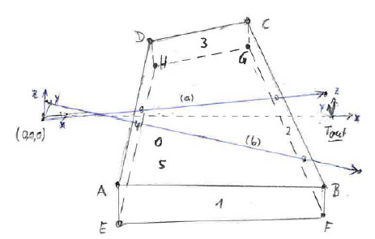

Figure: quadrangular field# x y z #--------------------------------- 20.0 -30.0 5.0 # A 60.0 -35.0 5.0 # B 50.0 40.0 5.0 # C 30.0 30.0 5.0 # D 20.0 -30.0 -5.0 # E 60.0 -35.0 -5.0 # F 50.0 40.0 -5.0 # G 30.0 30.0 -5.0 # HFor a triangular prism, points D and H have to be set identical to C and G (see figure). Everything behind a '#' symbol is treated as a comment.
| Parameter Unit |
Description |
Range or Values |
Command Option |
| field range file | input data file containing the edges of the magnetic field (see text and figure) | - | -P |
| magnetic field X, Y, Z [Oe] |
x-, y- and z-component of the magnetic field inside the edges Outside this range, a zero magnetic field is assumed. |
any | -F -G -H |
| output X, Y, Z [cm] |
x-, y- and z-position of the output frame (in the input frame) (see figure) | any | -q -r -s |
Last modified: Tue May 8 17:08:06 MET DST 2001